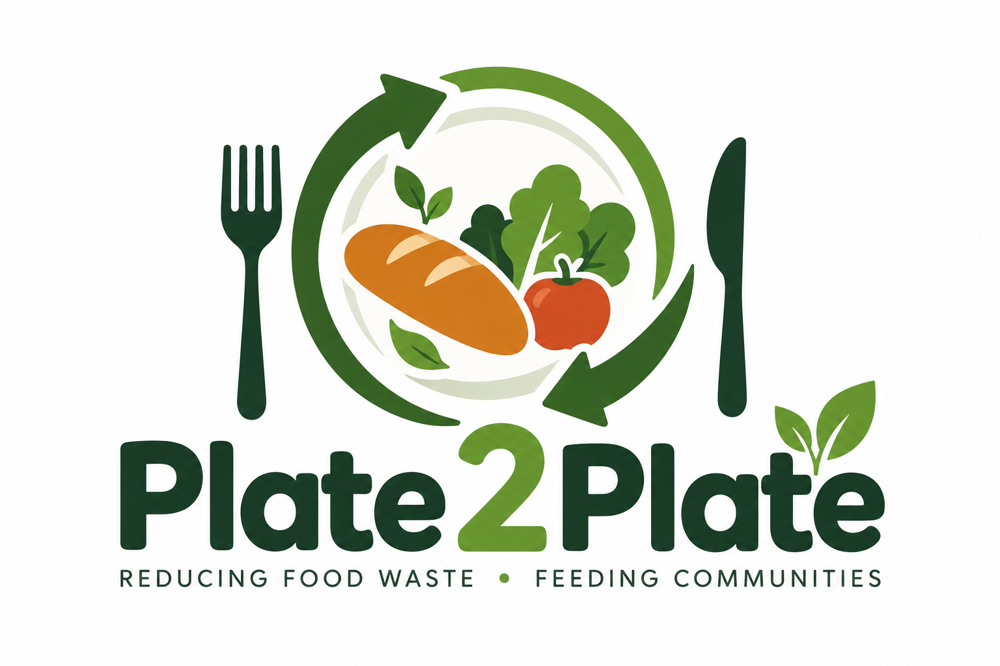
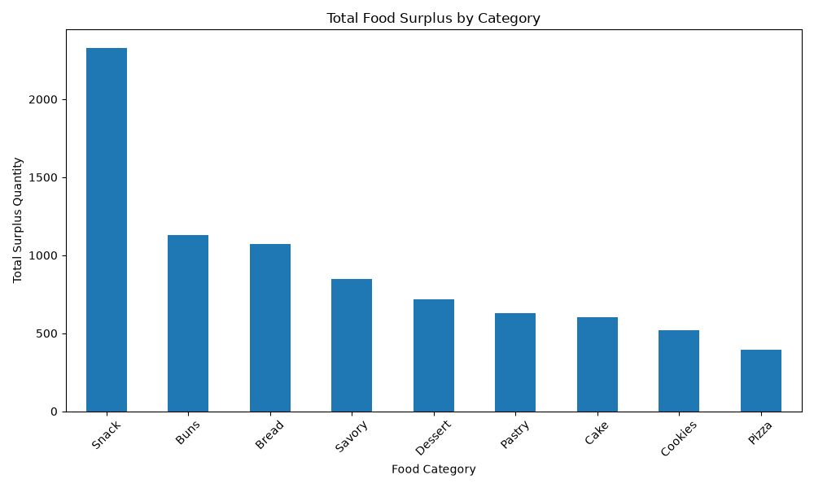

🔄 Plate 2 Plate User Flow
The complete user flow of the Plate 2 Plate platform.


Plate 2 PlateA food redistribution platform connecting bakeries, surplus food, and NGOs to reduce food waste and support communities in need.
The complete user flow of the Plate 2 Plate platform.
Entity Relationship Diagram showing the database structure of the Plate 2 Plate project.

Visualization generated from the Plate 2 Plate food waste data.

Business analysis generated directly from the Plate 2 Plate food waste, surplus and donation database.
Loading...
Loading...
Loading...
Loading...
Highest-surplus food category: Loading...
Highest-waste food category: Loading...
Food surplus currently available from participating bakeries.
Loading surplus food...
Bakeries participating in the Plate 2 Plate platform.
Loading bakeries...
NGOs receiving and redistributing surplus food.
Loading NGOs...
Track food donations and pickup status.
Loading donations...